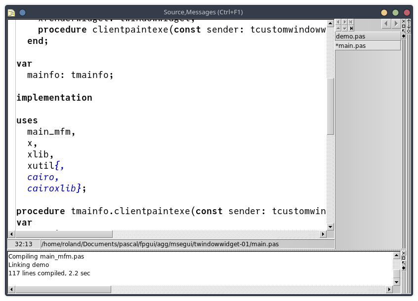

Choisir la police de l’éditeur de source par la ligne de commande, au
moyen de l’option --FONTALIAS.
Voici le contenu du fichier mseide_xxx.desktop qui me sert à lancer depuis mon bureau l’une des versions de MSEide présentes sur ma machine.
[Desktop Entry]
Version=1.0
Type=Application
Name=MSEide maint 2506061201
Comment=Pascal IDE
Exec=/home/roland/msegui_xxx/apps/ide/mseide --globstatfile=/home/roland/msegui_xxx/apps/ide/mseide.sta --FONTALIAS=mseide_source,JuliaMono,18 %F
Icon=/home/roland/msegui_xxx/msegui_64.png
Path=/home/roland/msegui_xxx/apps/ide
Terminal=false
StartupNotify=true
Categories=Application;IDE;Development;GUIDesigner;Programming;Personnellement j’ai choisi la police Julia Mono (après lecture de cette page).
